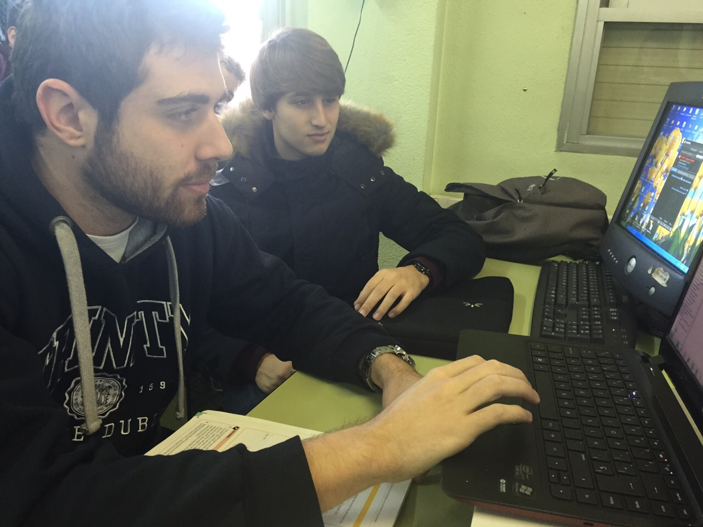
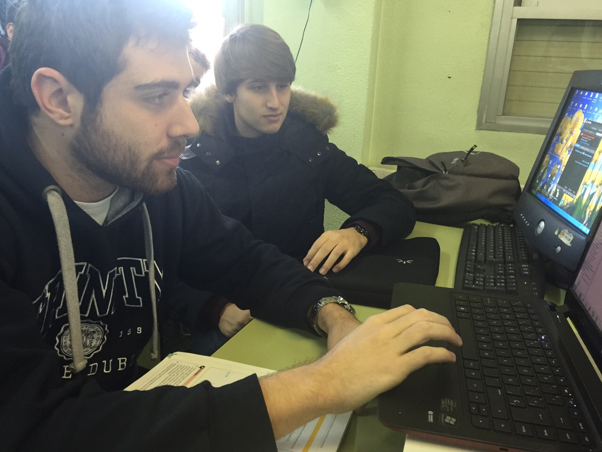

Hogar Digital
2º STI
IES Benjamin Rua


 



El objetivo de esta práctica es hacer funcionar y controlar una tarjeta de puerto paralelo a partir de un programa. La aplicación será la activación o desactivación de distintos dispositivos.
Es necesario crear un programa que servirá como interfaz de control de la tarjeta. Para ello, hemos usado Microsoft Visual 2010. Una vez descargado e instalado, seguimos las instrucciones del archivo PDF “Apuntes” que contiene la carpeta “Programa”, facilitada por el administrador. Después de editar el texto del programa, se compila y ya está listo para usarse.Es necesario activar el puerto paralelo para que funcione. Para ello, usamos el programa “UserPort” que encontraremos en la página web: olmo.pntic.mec.es/jmarti50/puerto_xp/userport.htm . Después de descargarlo, ejecutamos el programa y hacemos click en “START” 1 vez (en su defecto, hacemos click en STOP y luego en START). Así dejamos activado el puerto paralelo.Por último, conectamos la tarjeta con el PC a través del cable paralelo. Ejecutamos el programa Puerto_Paralelo.exe, y nos saldrá en pantalla una interfaz con botones ON/OFF con los que activaremos o desactivaremos los distintos relés de la tarjeta puerto paralelo. Con el botón RESET volvemos todos los relés a su estado original. Así, podremos ser capaces de controlar muchos dispositivos que nos permiten tener mayor comodidad y ahorro en el hogar.